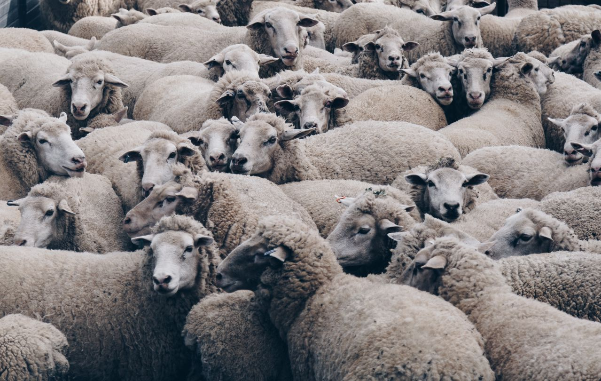
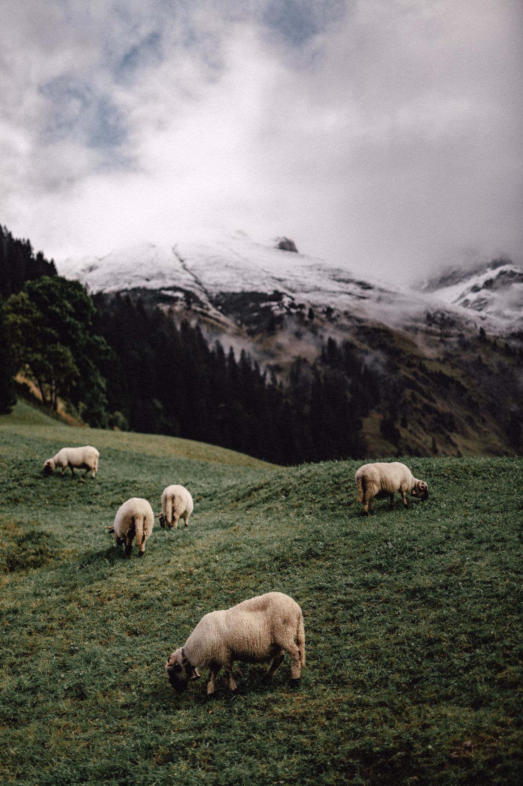

Я Андрей. Вот решил что-нибудь написать. Думаю в последнее время много чего. Мы одни на этой земле, и тут ты ничего сделать не можешь. Ты не можешь проконтролировать, где ты родишься, как ты познакомишься со своей будущей женой, здесь ты - ничтожество.
Сегодняшняя ситуация в мире заставляет подумать, а всё ли хорошо у нас? Естественно, нет. Любой будет говорить, что где-то там кто-то и как-то умер, да и вообще всё катится ко дну, говорят они. Кто они? Говорят это герои, злодеи, простые смертные.
Говоря проще, все мы чего-то боимся, и в этом вся суть дела. Злодеи боятся героев, и наоборот, а что обыкновенные люди? Они тихо сидят и смотрят в телевизор, восторгаясь поступками супергероев, и ужасаются над поступками злодеев. Человеку свойственно смотреть, наблюдать, изучать, рассказывать, играть.
Я вот обычно этим только и занимаюсь. Впитываю в себя всю ненужную мне информацию, а потом, как губка, выжимаюсь, рассказывая всё своим друзьям, коллегам, родственникам, самому себе.
В свои шестнадцать многое я рассказать не смогу, но книгу написать очень хочется. Руки прямо-таки и чешутся! Наверное, просто это очередное желание выжать себя, как ту же самую губку.
Идея писать пришла, когда начал серьёзно курить, а что из этого вышло - хрен его знает. Сидел на лавке, думал о чём-то из недавно увиденного, размышлял, переваривал сто раз кашу в своей голове. В кулинарии данную кашу посчитали бы за еду для собак, но в голове человека эта каша становится всё вкуснее и вкуснее, потому что человек начинает думать.
Познакомиться со мной может любой желающий. Подойди ко мне в школе (учусь я в 11а классе, Лицей №15 (2018-2019 года)), скажи, что прочитал данный текст, да и вообще скажи все свои мысли, и что ты думаешь о моём чтиве.

доброе утро доброго дня.
как-то одним серым днём типичного серого Санкт-Петербурга случилось то, что не должно было случиться. жила здесь серого цвета настроения девушка, с желтыми и масляными, как блин, волосами. звали её отбросом, изгоем, никому не нужной, либо никак не звали, потому что не знал её никто. эта девочка - я.
типичный день переливался в вечер, а затем и в ночь, так снова, и снова.
новое утро в старой коммуналке, которая была построена в 1987 году, было таким же типичным, как и всегда. моя семья была переселена в этот дом в 1993. мать и отец были наркозависимы, умерли пять лет назад прямо на улице. вместе обдолбались героином, да и сдохли, как собаки на холоде. счастливая общая, может быть, даже одновременная смерть - всё прямо как в сказке!
меня, по моему желанию оставили жить в этой одной комнатке, с общей ванной, если это вообще ванной назвать можно.., общим туалетом, похожим на дырку в подземный мир, общей кухней с запахом дешёвого табака, и вечно дурно пахнущий коридор и прихожая. соседи были вечно пьяными, как мне казалось, хотя наверняка были и нормальные люди, которые чисто случайно были заселены сюда. однажды, когда я решила погулять в холодный день лета, опять же таки, чисто случайно, познакомилась с одним очень приятным человеком. это была женщина средних лет, с алыми, как кровь волосами, и черными бусинками парочка глаз. знакомство началось из-за того, что я решила поухаживать за цветами в коридоре, который казался умершим без них. как бы от нечего делать взяла чашку, налила туда воды, да и приступила поливать каждый горшок почти увядших цветов. ну и тут, во время полива растений подошла эта женщина. приятно пахнущая недешевыми духами, полненькая с большими щеками и наряд как у обычной домохозяйки - сорочка, больше схожее на платье, но точно не второе, так как было очень тоненьким и свободно сидело на пухлом теле женщины.
-какая ты у нас умничка! - загорланила она вдруг, и с испугом я дернулась в сторону - а зачем ты делаешь это?
-как зачем? так чтобы ты спросила! - тут я поняла, что сама завожу разговор в тупик, и заставляю думать её, что я быдлятина какая-то.
воскресное утро впервые наполнилось хоть каким-то разговором за последние два года, но и то, я напрочь попортила этот диалог. после моих слов, женщина как-то странно прищурилась, отвернулась, и пошла в другой конец коммуналки, открыла окно и закурила дешёвые сигареты "прима" без фильтра.
вот так я и познакомилась с этой женщиной. её звали Жанной, ей было 49 лет, и она занималась целыми днями только одним - шила носки, да шарфики, а потом успешно, недорого продавала их на рынке за какие-то там сто-сто пятьдесят рублей. видимо это хобби доставляло ей огромное удовольствие.
мои увлечения были так же не страсть как разнообразны. я курила, пила алкоголь на деньги тётки, которую я называла ласково - "лёля". так вот, деньги она давала мне довольно большие, ну на жизнь хватало. мой бюджет на 12 месяцев составлял 100 тысяч рублей. не особо люблю деньги, а если честно, то просто ненавижу. они заставляют человечество воевать. именно эту вещь я чувствую как чужеродную. да что там говорить...я сама себя чувствую чужеродной в этом счастливом обществе.
как бы там не было…но у меня в запасе всегда были деньги. лёля боялась, что я тут же всё потрачу на наркотики. думаю это была забота. я мало знаю, что такое забота и любовь. очень мало знаю, что это на самом деле.
недавно мелькала говно-новость про то, что в ближайшем времени в Дании может быть введён инструмент добровольной эвтаназии, не связанной с заболеваниями. по-моему мнению идея замечательная. сейчас ехала в автобусе и думала, а что я буду говорить психологу, и что он сможет мне ответить?
главная проблема заключается в том, что я не вижу никакого внятного смысла в жизни. всякую мифологию я отбрасываю сразу. Я не верю в богов, жизнь после смерти, реинкарнацию и т.д. я не особо могу представить механизм перехода сознания в другую форму, и больше всего представляю себе смерть как сон, без сновидений, активности мозга и т.д. Как каждую ночь засыпаю и просыпаюсь утром, а прошло уже 6-7 часов, и моего сознания в эти 6-7 часов я не помню напрочь. многие дурачки будут приводить в качестве примера смысла жизни вещи, которые я смыслом жизни банально не считаю. я понимаю, что моё состояние вызвано депрессией, но я, наверное, так долго в ней нахожусь, что уже и не помню, как жилось без неё. я не особо страдаю в своей жизни, я не болен, по возможности избегаю стресса, не подвергаюсь насилию, ни психологическому, ни физическому. я живу в относительном достатке, то есть я каждый день у меня есть деньги, но на то, чтобы ещё больше улучшить свои условия моей зарплаты уже не хватит. семья - единственный фактор, который держит меня в данный момент на плаву. лёля... конкретно в данный момент меня больше всего беспокоит именно она. лёля - единственный человек, который меня любит по настоящему, её мне жалко больше всего. больная, но в силу небольшой деменции, она немного зависит от меня, и без меня её жизнь была бы не так комфортна. друзья - у меня есть пара друзей. большой роли мой уход в их жизни не сыграет. мы не дружим настолько, чтобы они сильно переживали по этому поводу. они скорее всего уход не заметят вообще. у меня лично сильной привязанности к какому-нибудь человек нет вообще. я могу не общаться с любым из этих людей и не испытывать при этом дискомфорта и желания с кем-нибудь законтачиться. иногда мне нужно общение. обычно хватает одного поста в ВКонтакте и одного "на хер иди" и моя чаша общения опять полная. я очень ленивая, мне лень жить. и эта лень выросла в осознание бессмысленности жизни. лично мне за всё в жизни приходится платить своим трудом. мне ничего не даётся просто так. я хочу находится в комфорте - но ради этого комфорта мне приходится работать и трудиться. у меня возникает диссонанс: "почему мне надо трудиться? почему мне не даётся всё просто так?". я прекрасно понимаю, что так устроен мир, но смысла жить от этого понимания я не нахожу. по мне так лучше вообще не жить, чем жить вот так - трудиться, чтобы просто жить.

«когда жэк отключит отопление я обхвачу колени твои, чтоб не околели»
-привет. ну как твоё самочувствие? что снилось? - раздался мужской, грубый, но очень приятный голос, как бывает у актёров, которые озвучивают своими голосами целые иностранные фильмы. их голоса безупречно атмосферно, и проникающе до сердца живописны.
пёстро красный пиджак с ярко белыми носками, и спокойно-коричневого цвета туфли просвечивались в полуоткрытых глазах. я сидела полулёжа на кресло-качалке. на мне были надеты совсем не новые джинсы, рубашка, которая на 3 размера больше меня, ну и кофта, покрывающая всю эту безвкусную одёжку. в отличие от меня, мой личный психолог доктор Д-к, так я его звала, хоть его настоящее имя было схоже на что-то еврейское, или мусульманское. это имя я очень долго запоминала. Рамиль, так его звали. добрый дядька, лет шестидесяти, хотя если бы он мне не назвал свой возраст, так я бы ему дала лет 49. очень опрятный, и добрый мужчина. уставившись на него я не подавала признаков жизни, и лишь полуоткрытые глаза, да двигающийся живот из-за подвижной диафрагмы могли меня выдать за тварь живущую. психолог ждал от меня ответа, но я уже напрочь забыла, что он говорил минуту назад.
-всё хорошо? чаю не хочешь? - снова возвратили меня к жизни его любезный, приятный голос.
-да, пожалуйста. только без сахара.
-я уже запомнил, дорогая моя, как лёля поживает?
я почему-то не могла ничего сказать. вот просто ничегошеньки. вот сказать хочешь, а вот ничего у тебя не получается. у многих людей, да и меня, часто такое бывает, когда сильно переволнуешься, вот как-то так и забивается комом мысль во рту. мыслей так много, что просунуться в горле не могут. то, что почувствовала я можно было и так описать, но меня больше останавливал страх. довольно глупо думать наперед, от этого больше начинает болеть голова. не люблю, когда голова болит.